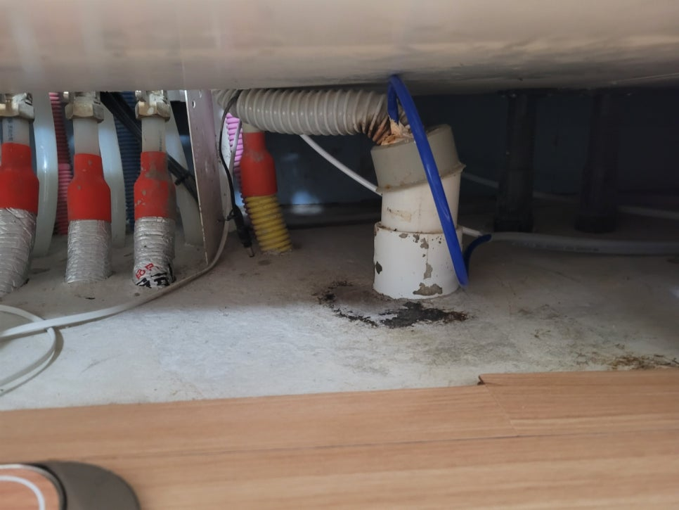
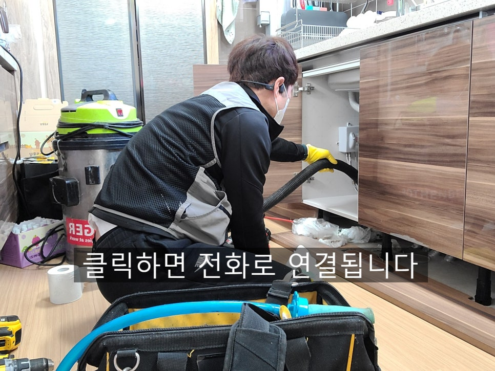
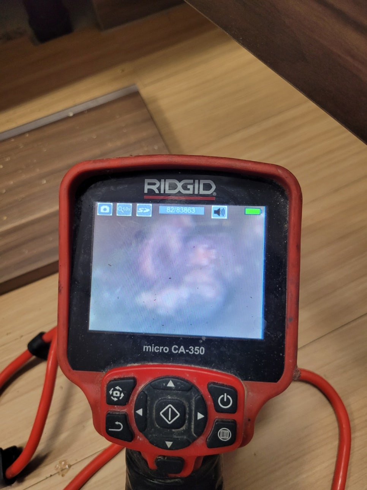
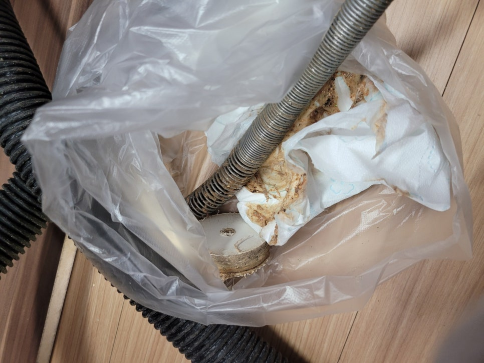
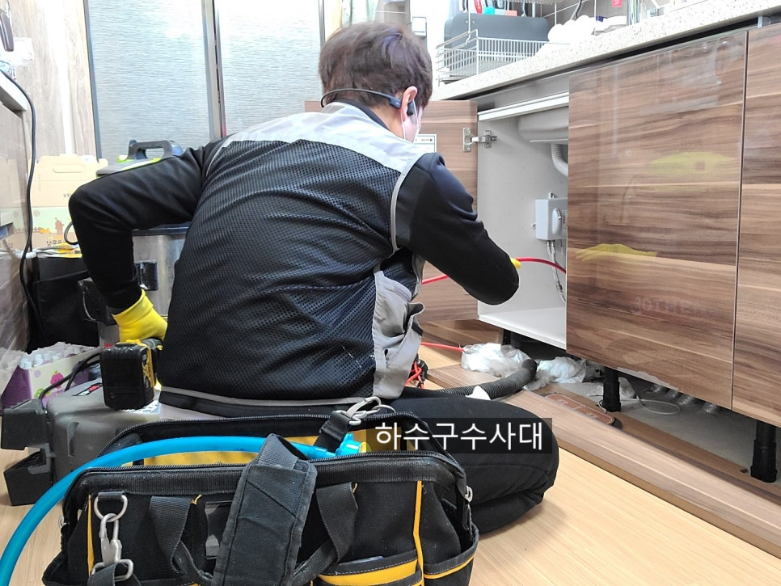
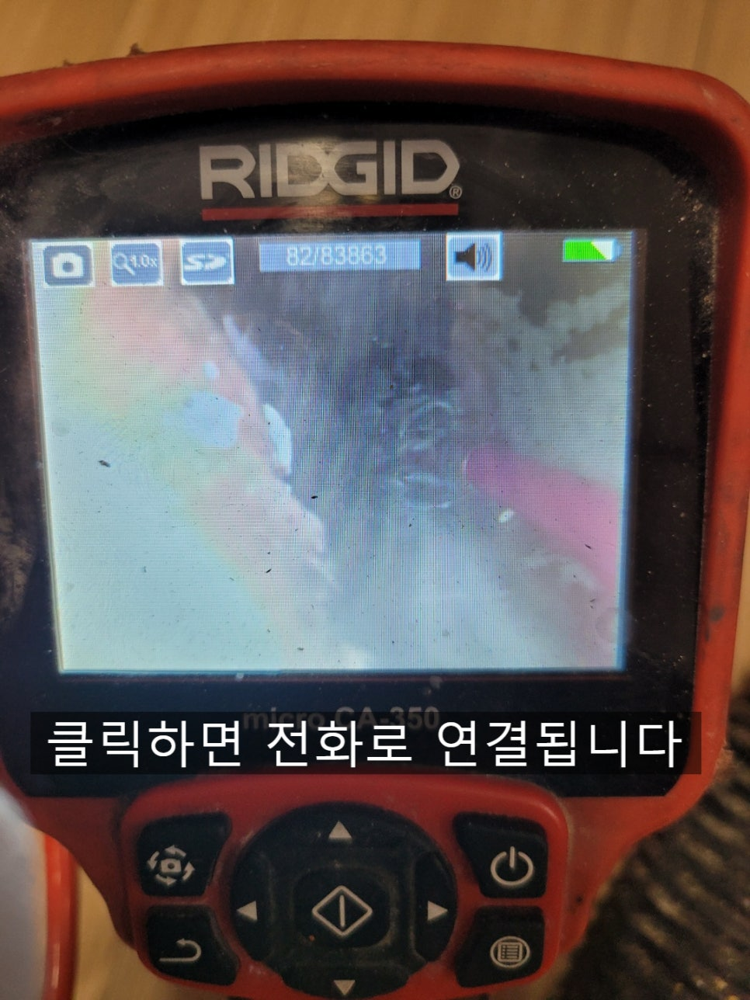

🏠 송탄하수구막힘 고덕동 이충동 지산동 송탄싱크대막힘
오산 싱크대막힘 전문 시공 후기

📋 작업 개요
- 위치: 오산
- 서비스 유형: 싱크대막힘, 변기막힘, 하수구막힘, 배관막힘, 누수수리, 역류해결, 뚫는업체
- 작업 일시: 2022. 2. 14. 0:01
- 업체명: 하수구수사대 (010-5615-2118)
🔍 문제 상황
송탄하수구막힘 고덕동 이충동 지산동 송탄싱크대막힘
안녕하세요
"하수구수사대"입니다.
갑자기 잘 사용하던 싱크대가 물이 내려가지
않는다면 당황하실텐데요 보통은 뚜러펑이나펑크린
같은 세정제를 부어서 해결되는 경우도 있지만
얼마 지나지 않아 또 막힘증상이 나타나거나 오히려
더 막히는 증상이 나타 나기도 한답니다.
단순하게 막히는 경우도 생기지만 하수구배관이 오랜기간
기름이 쌓여 막히는 경우도 있으니 꼼꼼하게 보는게 중요해요.
필수장비중에 하나는 내시경카메라 인데요 배관속까지
정확하게 확인할수 있어 필수장비중에 하나입니다.
막힌 지점을 파악하는 방법에 있는데요 이는 하수구연결구조가
어떻게 마감처리 되어있는냐에 따라 달라질수 있는데 대부분
구조가 위 사진처럼 되어있을 거에요.
물을 바가지같은곳이 받아서 한번에 내렸을때 하수구에서 물이
새어 나온다면 하수구가 막힌것이라고 판단하시면 되고 밑에서
새지 않는다면 위쪽에서 막혔을 확률이 높답니다.
싱크대는 음식을 설거지하면서 하수구로 흘러들어가는 기름때문에

🔎 원인 분석
💡 전문가 진단: 하수구수사대010-2340-2118
배관에 슬러지가 붙게 되는데요 주기적으로 펑크린을 부어주고
관리를 한다면 좋지만 대부분의 사람들이 하수구까지 신경쓰지
않는것이 현실이에요.
하지만 하수구에서 물이 역류하게 되면 상황이
달라지는데요 우리가 자주 사용하는 변기,욕실,싱크대물이
시원하게 내려가지 않고 역류한다면 굉장히 불편함을 느끼실거에요.
단순하게 막혀서 뚫린다면 다행이지만 반복적으로 하수구가 막힌다면
얼마나 불편할까요?
오늘은 #송탄싱크대막힘 현장을 리뷰해 볼건데요
아파트싱크대의 경우 현장에 가보면 물이 하수구에서 흘러나와
바닥에 물이 새어나온 흔적들을 자주 보곤한답니다.
하지만 하부장은 걸레받이로 가려져 있어 일시적이고
미세한 누수는 발견하기 어렵답니다.
아파트싱크대는 누수가 지속적으로 생기면 밑에집 천장에
누수가 될수 있어 #싱크대막힘 증상이 있다면 꼼꼼하게 보는게
중요하답니다.
내시경카메라로 하수구배관을 들여다보니
기름슬러지들이 가득차 있는것을 확인할수 있는데요
이처럼 배관을 뚫기전에 내시경으로 좀더 꼼꼼히 보면서
작업하는것도 중요하답니다. 간혹 싱크대배관안에 칫솔이나

🔧 작업 과정
싱크대호스 조각등 이물질이 있을수 있기도 하답니다.
하수구수사대
010-2340-2118
배관을 내시경으로 확인을 했으니 기름을 제거하는 작업을
하는데요 내시경으로 중간중간 확인을 하면서 작업을 하기때문에
배관에 무리를 주지않고 작업이 가능하답니다.
플렉스샤프트는 하수구전문장비인데요 여러가지일을
하시는 설비사장님들과 달리 "하수구수사대"는 하수구전문업체로
하수구전문장비만 가지고 다닌답니다^^
일을 하면서 배관이 깨진다거나 금이 가는 일은
절대로 없으니 안심하셔도 된답니다.
하수구에서 플렉스샤프트가 회전을 하면서 기름들을
제거하고 있는데요 내시경으로 배관을 들여다보면서
꼼꼼하게 제거해 나갑니다.
간혹 이물질이 나오기도 하지만 내시경이 있으니
왠만한 이물질은 모두 빼낼수 있으니 걱정마세요^^
하수구를 뚫을때 사용하는 장비는 흔히들 아시는 스프링장비가
있답니다. 스프링장비는 말그대로 뚫는 장비로서
막힌구간이 있다면 구멍만 내주는 정도라 언제 막힐지
모르는 불안감을 주기도 하답니다 ㅜㅜ
특히나 음식물을 지나가는 하수구에는 대부분 오래되면
기름이 쌓여 구멍이 좁아지게 되는데 머리카락이나 기름덩어리가
좁은 구멍을 막게되면 증상이 나타나기 시작해요.
또한 좁은 구멍에 많은양의 물이 흘러들어가면 소화하지 못하고
역류증상을 보인답니다.
물이 흘러나가는 하수구배관에는 기름이 잘 끼지 않지만
배관이 쳐져서 물이 고여있다면 물위에 기름이 떠서
배관 옆부분부터 기름이 쌓이기 시작한답니다.
이러한 기름을 펑크린을 부어주면 기름이 쌓이는 속도를
억제할수 있으니 참고해 주세요^^
항상 작업을 마무리하고 나면 물을 받아서 내려주는데요
하수구가 뻥 뚫려있다면 물내려가는 소리부터가


✅ 작업 완료
다르답니다^^ 물을 받아서 내리면서 싱크대호스와
바닥에서 물이 새는지도 체크해주는것 또한 중요하답니다.
요즘 코로나로 인해 집에 거주하는 시간이 많다보니
집에서 요리를 하는 시간이 많으실 텐데요 되도록
기름은 휴지로 닦아내고 설거지를 하시는걸 추천드려요^^
저희 "하수구수사대"는 주말,공휴일 항시 출동대기하고 있으니
하수구막힘으로 고민중이시라며 언제든지 연락주세요!
경기도 오산시 오산로160번길 15 201-L16호



⚠️ 베란다 누수 및 방수 관리 방법
- ✅ 비가 많이 올 때 창틀 주변이나 아래층 천장에 얼룩이 생기는지 정기적으로 확인해 보세요.
- ✅ 우수관 주변 실리콘 마감이 들뜨거나 깨진 틈새가 있는지 손상 여부를 수시로 체크하세요.
- ✅ 베란다 바닥 타일의 줄눈(메지)이 소실되면 그 틈으로 물이 침투하여 누수가 유발됩니다.
- ✅ 누수 의심 증상 발견 시 방치하면 아래층 손실이 커지므로 즉시 전문가의 진단을 받으십시오.
💡 핵심 정리
- 확실한 장비 작업(내시경 점검 및 샤프트 스케일링)으로 원인을 뿌리 뽑습니다.
- 작업 후 1년 이내에 동일한 부위 재발 시 100% 무상 A/S 서비스를 보장합니다.
- 서울 · 경기 · 인천 전 지역에 24시간 언제든 긴급 출동할 수 있도록 항시 대기 중입니다.
❓ 자주 묻는 질문 (FAQ)
🚨 오산 싱크대막힘 문제로 고민이신가요?
정확한 원인 진단과 확실한 시공으로 재발 없는 해결을 약속드립니다.
24시간 긴급 출동 | 서울 · 경기 · 인천 전지역 | 1년 내 재발 시 무상 A/S